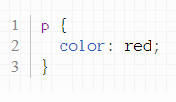

Мы с вами уже разобрали основные теги языка HTML и теперь пришло время навести красоту. Хотелось бы иметь возможность менять цвет текста, его размер, фон и многое другое. Это делается с помощью языка CSS. Как правило, CSS команды (стили) хранятся в отдельном файле, который подключается специальным тегом ко всем HTML страницам нашего сайта. Преимущество такого подхода в том, что CSS файл один, а HTML файлов может быть любое количество, хоть тысяча. Если мы сделаем изменение в одном месте CSS файла, например, покрасим все абзацы в красный цвет, то эти изменения применятся на всей тысяче HTML страниц, к которым подключен наш CSS файл. Очень удобно и быстро. Файл со стилями должен иметь расширение .css. Чтобы подключить такой файл к HTML странице, в теге head следует написать такую конструкцию:
В следующем примере к нашему HTML файлу подключается CSS файл styles.css:
Создайте и подключите ко всем вашим страницам файл styles.css.
Каждому тегу в HTML соответствует так называемый селектор CSS. К примеру, тегу
соответствует CSS селектор p, с помощью которого мы можем обратиться ко всем абзацам HTML страницы и, например, покрасить их всех одновременно в красный цвет. После селектора следует ставить фигурные скобки, внутри которых следует писать CSS свойства. Свойства и задают цвет, размер шрифта и другие интересные вещи. Их следует писать в таком формате: имя свойства, потом двоеточие, потом значение этого свойства (например, свойство - это цвет, а "красный" - это значение). Потом нужно поставить точку с запятой и можно писать следующее свойство.
Давайте, например, покрасим все абзацы в красный цвет:
В вашем файле styles.css разместите код, красящий абзацы в красный цвет. Откройте страницы вашего сайта в браузере и убедитесь в том, что все абзацы стали красными.
Помимо ключевого слова red, задающего красный, можно использовать и другие английские слова для цвета, например, green - зеленый, blue - голубой, yellow - желтый, orange - оранжевый, black - черный, white - белый. Используя соответствующие селекторы покрасьте заголовки h1 в зеленый цвет, заголовки h2 в голубой, заголовки h3 - в красный, а абзацы - в оранжевый.